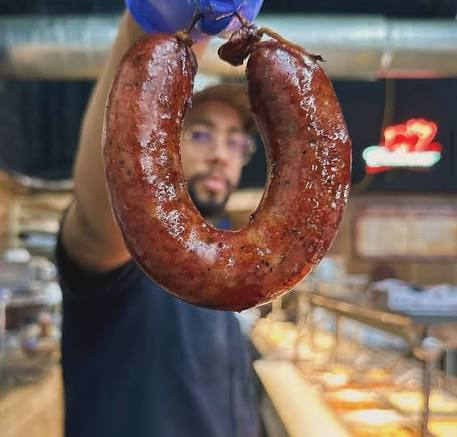
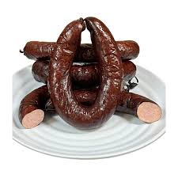
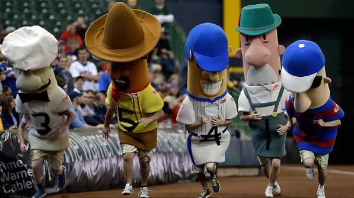

Same 10 as the open-page board. Emergency updated Fri Sep 4, 4:00 AM. Rotates after 24 hours on a token update. Items stay out of the board for 15 days.
Saturday, Oct 10 • 2:30 p.m. CT
Texas vs Oklahoma
Cotton Bowl, Dallas — Red River
TV: ABC
Last out: Texas 20, Tennessee 17. Horns 4-0. Bye this week.
5AM Doc check Wed Sep 30. Google Doc still no brand-new New Stuff (Lammes, gym, problem-people, Wake-Up, Uber already on the board). Cleaned Sep 28 moved-notes (>48h). No 7-day moves. Grok + Farmed already refreshed for Wednesday — 2× Mojo Detroit.
Austin neighborhood sidewalk safety review
Central Texas parks trail upgrades
Headlines only today. Full story moves to Local after 36 hours.
Austin teacher Alasin DeVeny wins $50,000 H-E-B Excellence prize
Headline only. Full story moves to Local after 36 hours.
Saturday result
#1 Texas 20, #14 Tennessee 17
Neyland Stadium, Knoxville
TV: ABC
Still 4-0. Colin Simmons 5 sacks. Next up: open date then conference slate.



Legendary Austin candy shop (Texas Chewie pralines, Longhorns, Sherbet Mints) closed this spring after 141 years. New partners (Delightful Development Co.) have the brand back — holiday pre-orders open now, nationwide shipping Nov 1. Soft phone: favorite Lammes memory, or “what dead Austin brand would you bring back next?”
Call if you still pay for a gym you barely use. Why keep it — guilt, January energy, the towel, or “I might go Thursday”?
Back pain, insomnia, weight, allergies, parenting, being single. Callers name the thing that makes everyone a doctor, then the advice they’ve heard at least 100 times.
Parents secretly give three facts about the sleeping kid — embarrassing nickname, unfinished chore, why they have to get up. Call live and see how long before the kid realizes they’re on the radio. Weekly benchmark energy.
Mojo asked about being driven somewhere by a date, employer, or friend — then put in an Uber for the return trip. Sharper phone: “What happened that made someone order you an Uber and send you away?” The receipt is the modern version of being thrown out.
Viral clips of pets glued to the wordless Korean seal cartoon. Colors and movement apparently hit the spectrum dogs and cats can see. Phone: has your pet ever watched TV like that? What show (or YouTube) freezes them?
City of Taylor deployed two autonomous lawn-mowing robots at the City Cemetery and is asking the public to name the pair. Soft phone: best robot names, or “what would you name the machines that keep the graves looking sharp?”
Austin’s new theme park at Circuit of the Americas opened Sep 26. Texas-only tilt coaster Circuit Breaker, Palindrome infinity coaster, family rides, food. Soft phone: first-day report, which ride are you most scared of, or “would you do a theme-park day at COTA?”
Adult rollerblade / inline groups rolling around town. Phone: ever joined a random adult sports meetup? Skate, bike, pickleball, run club — what’s the weirdest group activity you’ve actually done?
Clip idea from the Doc. Phone: the sci-fi thing that quietly showed up in your pocket and you barely noticed.
Read a map, write cursive, drive a stick, change a tire, memorize phone numbers, make change. Then younger callers name something JB and Sandy’s generation cannot do.
Same log as the box on Edited Audio.
Use the JB & Sandy Audio Extractor on your computer (Windows or Mac).
↓ Download Audio Extractor (Mac & Windows)
Platform reliability:
✅ YouTube – works best
⚠️ Instagram & Facebook – hit or miss (they block a lot)
✅ TikTok & X – usually good
You can also paste links here in the Grok chat and say “extract audio” if you need help.
Short clip energy. Play it, then phone: “Who is your ‘this person is secretly great at everything’ celebrity?”
Drop / reaction clip. Instant “we’ve all got a Linda” phone topic.
Would you ride it?
Harrison Ford and Cookie Monster cooking and “num numing” the Raiders of the Lost Ark theme. Pure visual drop gold.
“These are the last people I want moving my stuff.” Funny observation about a local mover staffed by artists. Cast confessions of the worst move ever + “would you hire the band?”
The eternal Texas debate just got specific. Who actually has the better brisket sandwich right now? Take sides, bring receipts, and let callers settle it.
There is a competition for everything, and Texas high school mascots deliver. Rank the weirdest ones you’ve seen or go to school with. Instant caller phone topic with photos.
Cast / listener recap. Who went, what did they wear, was it more honky-tonk or more costume party?
Twice-a-year blowout at Palmer Events Center, 140+ local brands. Monday-after phone: “What did you actually buy, and do you regret it in the daylight?”
Austin Train Show all weekend — 25,000 sq ft, Lego railroad, kiddie express. “Did you go, or do you still have the box of trains from your dad in the garage?”
Chaparrals open the 2026 season with a thriller at Chaparral Stadium, rallying past California power Inglewood. QB Patton Jones (first career start) accounted for three TDs. Classic Friday-night energy + Texas vs. California bragging rights. Phone: “Best high-school football memory or most dramatic comeback you’ve ever seen?”
Kid (or kids) showing up with giant carrots? Visual bit / phone: “What’s the weirdest good-luck item or costume you’ve seen at a game?” Local color after the biggest win in years.
Blockbuster, Tower Records, Toys R Us, Circuit City, Foley’s — then localize. Heritage-listener phone.
Austin observation gold. “In a city full of Teslas… have you ever actually met someone who works there?” Soft phone + Cybercab tie-in.
Local Austin food landmark news. Phone topic: “What’s the most Austin place that has taken a beating lately?”
Rail service suspended while crews work on the new North Burnet/Uptown Station.
About 9,000 more than last year. Caller: “Was getting into UT harder when you applied… or does it just feel that way now?”
Local visual / story note.
20th year at the Congress Ave Bridge, 3–11 p.m. $15 advance. Bats are the headliner and they don’t publish a set time.
“In Austin, even the headliner doesn’t know what time the bats are going on.”
Smithsonian Museum Day was Sep 20. Soft: which free museum did you hit, or which one is still on the list?
Most-viewed regular-season game in 10 years. Play a Spanish-call clip if we can get it.
Phone: would you even know a print if you saw one?
Sandy rollerblade visual. Patios, live music space, pop-ups.
10401 Anderson Mill Rd., Ste. 106. DIY by the stem.
Texas football + wildlife. Good small-town news sting.
Local impact note for boaters and lake people.
Local mystery + band connection. Still floating as a soft local story.
Local sushi food truck Little Nishi expanding on Southern Oaks Drive. Softshell tempura, hand rolls, sashimi coming.
Driver figured out a way to have the car move every two hours so it wouldn’t get a ticket. Austin EV owners will have opinions.
Perspective bit on the size of the local factories.
Big pre-game energy on the 40 Acres. Stapleton + Stella Lefty is a serious local flex. “Are you going for the music, the tailgate, or both?”
Steve Sarkisian talking about the current NCAA eligibility chaos with former NFL guys circling back. Local sports-talk energy without getting in the weeds. Soft phone: “Should a guy who was in an NFL camp be allowed to play college ball again?”
Reports of a body-on-frame midsize SUV revival to fight the 4Runner / Bronco / Wrangler. Phone: “Would you buy a new Jimmy, or is the name still stuck in the ’90s for you?”
Porsche “S1” flat-eight rumor is the example. Phone: your weirdly specific headline.
Dive without holding your nose, no-handed bike, whistle, snap, chopsticks, cartwheel, gum bubble.
Hosts say the line first. Movie, old commercial, SNL, lyric. Then: what have you said for 30 years that younger coworkers think you invented?
Joint Facebook? Shared email? Location tracking? Knowing passwords? Answering each other’s phone? Hosts call each Healthy / Weird / Something Happened Here.
Phone bit idea from the Doc.
300,000 sq ft sporting-goods palace with a 65-ft indoor Ferris wheel, 16,000-gallon aquarium, candy store and café. Grand opening starts 7 a.m. with giveaways and skydivers. “Are we going for the gear or just to ride the Ferris wheel inside a store?”
Season is almost here. “What’s the one Longhorn take you will die on?” Perfect for Friday energy and callers who think they know more than the coaches.
Austin EV owners will have stories. “Have you ever babysat the range or pushed it on purpose?” Pair with the parking-ticket hack.
Local hero energy just down I-35. “What’s the most Austin/Central Texas way to celebrate a hometown champion?”
Cool local look at an Austin landmark. Date-night / local-pride recommendation that isn’t another bar tip.
Local film/TV interest. Light industry/cool-job angle.
Instagram reels of a band performing on Lake Austin. Local vibe + “what’s the most Austin place you’ve seen live music?” Audio already in Edited Audio.
Limited-time or local buzz food item. “Is this a yes or a hard pass?”
A physical video store is opening near the airport. Nostalgia + “when did you last rent a movie?”
Local growth story. “Would you still move to Georgetown now, or is the secret out?”
ParkScore rankings. Austin climbed. Soft local pride + “which park is actually your go-to?”
Instagram reel gold. “Is this peak Austin summer or just enabling day-drinking?”
Statesman data piece. Everyone has a candidate. Take calls, then reveal the actual #1.
MySanAntonio explainer. Perfect for “what do you actually do at red lights?” confessions.
Caller has 20 seconds to imitate the phrase, noise, or habit their spouse does constantly. Then get the spouse on and let them impersonate the caller. Second act is the bit.
Honest phone topic. Solo trip, friends trip, or never. What’s the longest you’d go?
It can only do one job for the rest of its life. Laundry, yard, dishes, or the H-E-B run? Time-consuming vs the one you hate.
Rule: you had to have done the job. Bartender, flight attendant, radio, chef, realtor, teacher, musician, working on a boat.
Studio empties pockets/purse on the table. Object that needs the most explanation wins. Listeners text photos. Plant a couple of weird items on purpose.
Listeners submit one compliment and one complaint — about a boss, a spouse, a roommate, or this show. Keep it light.
Throw pillows, thermostat, ceiling fan, dishwasher, decorative towels, shoe zone. How many YEARS has this argument been going on?
What belongs? What is a crime if it gets in?
One compliment + one complaint. Sandy as HR, anonymous. Reverse roles next day. Save lines as imaging.
Hunting, fantasy football, golf, cycling, boating, gardening, gaming, Christmas decorating. How many hours a week before it’s a second relationship?
New research flips the old advice: a moderate weekend lie-in (about 90 minutes extra) is linked to lower high-blood-pressure risk. Overdoing it is still not ideal. Perfect phone: “How late is too late on a Saturday, and do you actually feel better?”
Pure cast bit. Rank the hosts/producers, then open it to listener votes. Visual, silly, and hard to mess up.
Classic “wait… what?” story energy. Two longtime friends discover through DNA or a family story that they are sisters. Phone topic: “What’s the wildest family secret that came out later in life?” Keep it light and local-feeling.
Tricia’s hill to die on. Board / social poll, then calls from believers vs “it’s a guy in a suit.” Keep it fun, not a lecture.
Teachers who never get a real bathroom break, nurses who skip lunch, radio people who talk for a living but can’t leave the mic. Phone: “What is the part of your job that still surprises people?”
Who still requires an actual phone call on their birthday? Mom? Spouse? Best friend? At what relationship level does a text become insulting? Does a personalized video count more than a call?
Car without a touchscreen, dumb TV, flip phone, physical concert ticket, analog thermostat, real key instead of an app. Challenge: live with the old version for 48 hours.
Do they not have to register cars? Light phone.
“Dad, quick question…” “Hypothetically…” “Are you in a good mood?” “So everybody else is going…” Flip: what phrase did YOU use on your parents?
Finish: “I was interested until you said _____.” 90-minute wait, costume party, no seats, shared bathroom.
Nosy, expensive house, free cookies, ex’s neighborhood. What surprised you inside?
Pickleball, Pilates, sushi, audiobook, cold plunge, Costco, cruise, e-bike. Cast each nominates one thing the other tries before Friday.
Quick cast or phone: the grown-up version of the kid drink, or the surprise that it still exists. Soft open: “What’s the childhood drink you still order when nobody’s looking?”
Court growth in the biggest U.S. cities slowed hard (just 4% last year after double-digit jumps). The boom cooled. Soft open: “Are you still playing, did you quit, or did you never start?” Phone: “What trend did you fully commit to that is already cooling off?”
Restaurant Weeks ended Sep 13. Pair with Golden Girls Kitchen still running.
Buttered noodles, beans and rice, breakfast for dinner, canned chili. Then: do you STILL love it?
Visual bit. Silent electric car rolling through headstones at night. Phone: “What’s the creepiest (or funniest) thing you’ve seen a Tesla do?”
Need or toy. Cast first.
Ohio State week tape. Pair with Sark/Arch audio.
The highest-horsepower Mustang yet is out. Car guys will care; everyone else can weigh in on “what’s the most overpowered thing you’ve ever driven or ridden in?”
Short bit / observation — girls and keychains.
Bit idea — guess the Facebook Marketplace asking price, Price Is Right style.
Curious “where does it go?” phone topic.
Saw a guy with perfectly white sneakers and wanted to stomp them dirty. Middle school / high school rule: new shoes get stomped; fresh haircut gets a slap on the neck. Caller topic gold.
Cast / industry phone topic that still has legs.
Standing bit format — rank anything.
Robert Kiyosaki’s line: owe the bank $20 million, you have a problem; owe $1 billion, they do. Phone: “Is that genius or a guy selling books?”
Amateur MMA fighter Cole Johnson claims he’s been offered over $500,000 to fight a chimpanzee (supposedly livestreamed). Experts say the injuries would be catastrophic. Pure phone: “Would you take the money? What’s the dumbest thing you’ve almost done for cash?”
New lists out: Porsche 718 Cayman & 911, Corvette, Tacoma hold value best; EVs and big luxury SUVs lose the most (LEAF, Model S, Range Rover). Phone: “What’s the car you owned that lost value the fastest… or the one that still surprises you on the trade-in?”
Fall sports are ramping up. Don’t make it only about alcohol. Ask: “What behavior is completely normal at adult sports but inappropriate at a kid’s game?” Drinking, heckling, coaching from the stands, booing officials, dressing like it’s the Super Bowl, screaming at an 11-year-old. Callers will have stories.
Touched on a sensitive subject at the Whole Foods bar by chiming in when it turned out Pam was going to be 20 minutes late for work. Classic “I should have kept my mouth shut” energy. Cast confessions of the times you accidentally made it worse.
Oyster, octopus, blue cheese, catfish, frog, beef tongue, Spam, raw fish, tofu… Rank the list, confess what you’ve never tried, or invent the one food that should be on the “never again” list. Quick phone topic.
Personal / cast bit. What simple adult skill do you still fail at? Eye drops, parallel parking, folding fitted sheets, using a can opener the “right” way. Everyone has one.
August is barely over. “Is this too early or are you already in full spooky mode?” Perfect Friday observation + caller poll.
Classic: Aggies after a loss, anyone whose plans fell apart, the “I already need a nap” crowd. Friday setup for Monday pain.
Shot put, hibachi, soccer scoring, talent in a beauty pageant. “What else is still exactly the same as when you were a kid?”
Pure visual bit. “What’s the most Austin version of neighborhood watch?”
You want to know how much people have changed? Bad News Bears came out 50 years ago. Nostalgia + “what kids’ movie still holds up?”
There is a competition for everything. Speed puzzling is a real thing. “What obscure competition would you secretly dominate?”
Cast bit / recurring idea — logging the small daily letdowns for comedy.
Recurring bit. Tricia catching up mid-conversation. Keep the running joke alive.
Athlete / coach / restaurateur / homeless / TV weather person / killer / musician / naked cyclist. Rank them or add categories.
Instagram gold. Cast examples first, then phones. Keep it light and office-safe.
Someone claims the record for most times engaged. Instant phone: “What’s your personal record for almost-getting-married / almost-saying-yes?” Or “How many times is too many times to get engaged?”
Cast bit. Phone: has a package ever felt like a prank?
Sandy seeing cheese being made. Hot dogs, chicken nuggets, honey…
JB was calling Smothers all second half… but it was Erin’s lucky titty that did it. Texas erased a 20-point fourth-quarter deficit and stunned #1 Ohio State 24-23. Pure cast gold + phone: “What’s your dumbest (or most effective) game-day superstition?”
Cast bit. Soft open: the thing you thought was gone that turns up in the garage / closet / trunk. Phone: “What’s the item you ‘threw away’ that your partner secretly saved?”
Who is actually in it. Phone: when did you last clean the car?
Texas guy, second FedEx Cup in three years. Overcame a two-shot deficit Sunday at East Lake. Phone: “Is Scottie the most boring superstar in sports, or is that the compliment?” Easy local pride drop.
Cast quality-of-life update. “What was the upgrade that changed your daily life the most?”
Running cast tease / character bit.
Cast bit / visual — Tricia going full kid-mode on a swing.
Short reaction / drop note.
Cast / relationship bit. Keep it playful.
Cast bit. Soft open: the partner who keeps asking until you invent an answer. Phone: “What’s the birthday plan question that makes you freeze?”
Cast bit. Soft open: the line that gets used once too often. Phone: “What’s the household phrase that needs to be retired?”
Someone has the number for the people who adopted Clyde’s brother. Should we organize a reunion? Soft, feel-good phone / cast bit.
New clip / comment on the record. Phone: the country song you still can’t believe is that big.
Social first, then on air. Must have Texas or a Texas city in the title.
New Cars and Freedom comparison. Play both hooks. Phone: homage or steal?
Tour announcement energy. “Which current country tour are you actually marking on the calendar?” Soft phone + playlist talk.
There is a guy who makes custom jingles for everything. “What would your personal entrance song / life jingle be?” Fast and funny.
Euphoria star strapped to a biplane over Kent, loop-the-loops, told Tom Cruise to watch out. Partner Scooter Braun was on the second plane. Phone: “What’s the craziest thing you’ve done for a date or a story?” Visual clip gold if you can get the video.
Music / country note that fits the show’s energy.
Host shares, then “what song still lives rent-free from when you were 10?”
Tribute only. Audio lives in Edited Audio → Sept 11 / Tribute.
Live-style report at the base of the towers. Listen
Local cadets volunteer Sep 13. Story page: open
New packet: Sep 28–Oct 2. (Rotated Sat Sep 26 after previous Friday end.) Questions get harder as you go. Posters are answers 7 and 8 — tap to download. Full week live on the this-week page.
Open this week full page · All weeks through Nov 13
Questions live on the this-week page so we do not rewrite them mid-packet. Today is Tuesday Sep 29.
Open this week (clickable Q&A + posters) · All weeks through Nov 13
Picked for the show: local Austin/Central Texas, birthdays, light entertainment. Refreshed Sep 30 AM. Flood Watch 7 p.m. tonight through Friday. Young Thug Moody tonight. Riley Green Thursday. ACL starts Friday with rain in the picture. No politics. More here → opens the full story.
Lacey Chabert 44 (Party of Five / Hallmark queen), Johnny Mathis 91, Fran Drescher 69, Trey Anastasio 62, Angie Dickinson 95, T-Pain 41. Soft: which Hallmark have you actually finished?
NWS: 7 p.m. Wed through 7 p.m. Friday for much of Central Texas. 2–4 inches possible, isolated 8. Low-water crossings and urban flooding are the worry. Soft: are you the “stock the fridge and cancel plans” type, or do you wait until the first street is a river? More here →
Fran Drescher 69, Marty Stuart 68, Trey Anastasio 62, Johnny Mathis 91, Monica Bellucci 62, Marion Cotillard 51, T-Pain 41, Eric Stoltz 65, Crystal Bernard 65. Soft: favorite Nanny energy, a Marty or Phish track, or the T-Pain Auto-Tune moment you still know every word of.
Julie Andrews, Randy Quaid, Brie Larson, plus a fresh crop of Oct birthdays. Soft: first movie you remember Julie Andrews in, or a fall birthday you actually celebrate.
New Generation Tour, doors 6:30, outdoor. Soft: last outdoor show you sat through in iffy weather, or are you skipping this one and saving the energy for ACL?
Jazz / blues / Detroit soul. Soft: Antone’s still the “this is real Austin” room for you?
Then the front. Highs drop toward the 80s Thursday–Friday. Water rates climb Oct 1. Soft: what’s your personal heat-cancel number?
Cowboy As It Gets Tour. Soft: country show you’re most looking forward to this fall.
Weekends Oct 2–4 & 9–11. Flood Watch overlaps Weekend 1 open. Soft: how early do you plot the schedule, and do you pack a poncho as a personality trait?
Holiday pre-orders open; nationwide shipping Nov 1. Soft: favorite Lammes memory, or next dead Austin brand you’d resurrect. More here →
Texas-only tilt coaster, Palindrome infinity coaster. Soft: first-day report, or Cotaland vs. a classic Six Flags day?
Driverless rides on I-35, MoPac, 183, 290 via Uber. Soft: highway trip in one, or surface streets only?
10 fresh Wednesday cards. 2× Mojo (Detroit) plus Smiley / Daly / Valentine / Seacrest / Miguel / Dwyer / Heidi. No Joe (Mon only) / Morton (Thu only). Audio recommend when no file.
Where it came from: Midweek “I brought it and never used it.” How they ran it: Host admits the thing they haul around for no reason. Phone: “What do you still pack / keep in the car / leave in the bag just in case?” JB & Sandy Austin version: Umbrella, jumper cables, snack that expired, extra shirt, the Flood Watch poncho. Did you actually use it this week? Audio: Recommend a short bed; otherwise pure talk.
Where it came from: Text-thread pile-up. How they ran it: Host reads the one message that restarted everything. Phone: “Which group chat in your life will not stay quiet?” JB & Sandy Austin version: Family, work, the neighborhood thread that lights up every time it rains. Who always replies first? Audio: Recommend a short bed; otherwise pure talk.
Where it came from: Midweek schedule shuffle. How they ran it: Host names the plan that didn’t survive Monday. Phone: “What plan of yours already got rewritten this week?” JB & Sandy Austin version: Dinner, the gym, a concert vs. the Flood Watch, kids’ practice. What replaced it? Audio: Recommend a short bed; otherwise pure talk.
Where it came from: Digital vs. analog. How they ran it: Host picks the thing they still refuse to do in an app. Phone: “What do you still want a human for?” JB & Sandy Austin version: Doctor, mechanic, H-E-B sample guy, the person who actually answers at the restaurant. Audio: Recommend a short bed; otherwise pure talk.
Where it came from: Selective blindness. How they ran it: Host confesses the thing they walked past. Phone: “What are you currently pretending is fine?” JB & Sandy Austin version: The noise in the car, the leak, the calendar, the conversation. How long can you keep it up? Audio: Recommend a short bed; otherwise pure talk.
Where it came from: Soft positive. How they ran it: Host shares a small kindness that stuck. Phone: “What’s the last unexpected kindness that actually landed?” JB & Sandy Austin version: Someone let you merge, covered a tab, texted first, or remembered the thing. What was it? Audio: Recommend a short bed; otherwise pure talk.
Where it came from: Morning energy. How they ran it: Host celebrates something small. Phone: “What’s your tiny win so far this week?” JB & Sandy Austin version: Made the bed, left on time, packed the rain jacket, answered the email. Keep it light. Audio: Recommend a short upbeat bed or song sting; otherwise pure talk.
Where it came from: Music as mood shift. How they ran it: Host names the track that changed the temperature. Phone: “What song flipped your mood this morning?” JB & Sandy Austin version: Car, kitchen, the one that came on when the sky got dark. Drop it. Audio: Play if cleared; otherwise recommend a short bed.
Where it came from: Meal-ruined energy. How they ran it: Host names the order that did not arrive as advertised. Phone: “What food order recently went sideways?” JB & Sandy Austin version: Wrong taco, missing queso, the drive-thru that heard a different name. What did you do? Audio: Recommend a short bed; otherwise pure talk.
Where it came from: Local sign-off. How they ran it: Hosts pick one scene that could only happen here. Phone: “What’s the most Austin thing you’ve seen or done this week?” JB & Sandy Austin version: Cotaland line in the heat, bats vs. rain, ACL setup at Zilker, a Cybercab, Lammes pre-order nostalgia. One picture in words. Audio: Recommend a short local sting if you have one; otherwise pure talk.
Parked on purpose — not deleted. Dolly tribute week plus related notes. Still playable and downloadable here.
Dolly Parton on Johnny Carson → Instagram Reel
Ideas: Could listeners leave Dolly messages? Play the best/emotional ones into Dolly songs or funny clips for the next few days. Listeners post pictures and Dolly tributes to socials.
Audio drops mentioned: Islands In The Stream (Kenny & Dolly), Dolly on Carson “bossomy,” Here You Come Again, Coat of Many Colors (live Ireland pub), Jennifer Aniston threesome bit, People Magazine worst dressed reaction, “wear your rubbers.”
Clip.
Clip.
Clip.
Clip.
Clip.
Clip.
Clip.
Clip.
Clip.
Clip.
Clip.
Clip.
Clip.
Clip.
Clip.
Clip.
Comedy drops. Files live in Dropbox (and on the H: drive). The site does not store the 616 MB. Open the folder, then grab the file that matches the name.
File on H: / Dropbox: Final Last Laugh Sid Davis Old Rock and Rollers.wav
File on H: / Dropbox: Final Last Laugh Steven Wright Breakfast Anytime.wav
File on H: / Dropbox: Final last laugh Wife is a Morning Person.wav
File on H: / Dropbox: Final Last Laugh Foxworthy Flip Flops.wav
File on H: / Dropbox: Final Last Laugh Derrick Stroup 90s Cowboys.wav
File on H: / Dropbox: Final Last Laugh Kathleen Madigan Airport Drinking.wav
File on H: / Dropbox: Final Last Laugh Wetting The Bed.wav
File on H: / Dropbox: Final Last Laugh Lachland Patterson-Women is so smart.wav
File on H: / Dropbox: Final last Laugh Brent Moran.wav
File on H: / Dropbox: Final Last Laugh Teachers-Jail.wav
File on H: / Dropbox: Final Last Laugh Jim Gaffigan Indoor Pools.wav
File on H: / Dropbox: Final Last Laugh Dusty Slay No Better Shirts.wav
File on H: / Dropbox: Final last Laugh Bill Mahr UFOs.wav
File on H: / Dropbox: Final Last Laugh Nate Bergatze Fight an orangatang.wav
File on H: / Dropbox: Final Last Laugh Karen Morgan Dorm Shopping.wav
File on H: / Dropbox: FInal Last Laugh Zoltan Kaszas Back To School.wav
File on H: / Dropbox: Final last laugh Jason McKinney No AC.wav
File on H: / Dropbox: Final Last Laugh Jeff Allan Sunscreen.wav
File on H: / Dropbox: Final Last Laugh Gaffigan Sunburn.wav
File on H: / Dropbox: Final Last Laugh Shane Gillis Al Quida.wav
File on H: / Dropbox: Final Last Laugh Joy Koy Street Names in Hawaii.wav
File on H: / Dropbox: Final Last Laugh Louie Anderson Ceasar Salad.wav
File on H: / Dropbox: Final last laugh Erica Rhodes Avacado.wav
File on H: / Dropbox: Final Last Laugh Wave Williamson Flight Concerns.wav
File on H: / Dropbox: Final Last Laugh Ron White Hurrican Evacuations.wav
File on H: / Dropbox: Final last laugh Jim Gaffigan Big Families.wav
File on H: / Dropbox: Final Last Laugh Sharks.aac
File on H: / Dropbox: Final Last Laugh College Wrestling.wav
File on H: / Dropbox: Final Last Laugh Xplosive D.wav
File on H: / Dropbox: Final Last Laugh Dusty Slay Rain.wav
File on H: / Dropbox: Final Last Laugh Seinfeld Kids Say Wait Up.wav
File on H: / Dropbox: Final Last Laugh Larry Cable Guy July 10 2026.wav
File on H: / Dropbox: Final Last Laugh Nate B Boating.wav